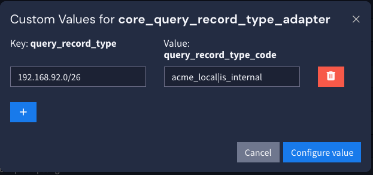

Lookup tables are used in places that require context but are not currently part of the asset model. Lookup tables used in Security Core are referenced at search time (when the query is run). This means they use a single key whose values are concatenated into it.
| Lookup Table Name | Key | Description |
|---|---|---|
| core_networks_adapter | ipe-separated list of tags to apply for a network range |
To configure these tables, they can be found within the Illuminate > Customization menu with the names listed above.
As an example, configuring the core_networks_adapter to add the tags "acme_local" and "is_internal" to any event coming from or going to the network range "192.168.92.0/26" will place them in the source_category and destination_category fields.
